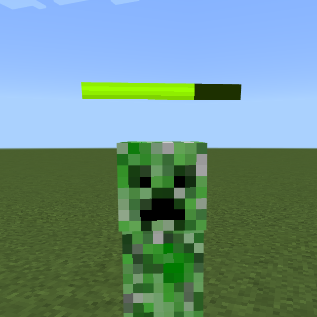

MinecraftBE - パーティクルだけでHPバーをつくる

目次は右上の「≡」から！
アニメーションコントローラやエンティティのクライアントjsonと紐付けするのは各自でやってください。
つけたいエンティティのjsonを編集して紐付けるので、すべてのエンティティにつけたい場合は手動ですべてのエンティティのjsonを編集する必要があります。
コマンドでこのパーティクルを出そうとすると何も出ません。追加できているかどうかはパーティクル単体では確かめることはできません。
※ 中級者以上向け
パーティクルのJSON
Res
particles/hp_bar.json
{
"format_version": "1.10.0",
"particle_effect": {
"description": {
"identifier": "ex:hp_bar",
"basic_render_parameters": {
"material": "particles_alpha",
"texture": "textures/particle/hp_bar"
}
},
"components": {
"minecraft:emitter_local_space": {
"position": true,
"rotation": true
},
"minecraft:particle_motion_parametric": {
"relative_position": [ 0.0, "v.particle_height", 0.0 ]
},
"minecraft:emitter_rate_steady": {
"spawn_rate": "Math.random(15, 25)",
"max_particles": 50
},
"minecraft:emitter_lifetime_expression": {
"activation_expression": 1,
"expiration_expression": 0
},
"minecraft:emitter_shape_custom": {
"offset": [ 0, 0.1, 0 ],
"direction": [ 1.0, 0.0, 0.0 ]
},
"minecraft:particle_lifetime_expression": {
"max_lifetime": 0.5
},
"minecraft:particle_appearance_billboard": {
"size": [ 0.5 , 0.05 ], // 拡大率 [ 横, 縦 ]
"facing_camera_mode": "lookat_xyz",
"uv": {
"texture_width": 64,
"texture_height": 64,
"uv": [ // (※1)
"(1.0 - q.health / q.max_health) *32",
"(q.health == 0) ? 36 : 30"
],
"uv_size": [ 32, 4 ]
}
},
"minecraft:particle_appearance_tinting": { // (※2)
"color": [
"math.min(2- 2*q.health/q.max_health, 1)",
"math.min(2*q.health/q.max_health, 1)",
0.0,
1.0
]
}
}
}
}
(※1) HPを検知してテクスチャに反映させている部分。
(※2) 白黒のテクスチャに色をつけるために必要なコンポーネント。後からこうして色をつけるためにテクスチャは白黒になっています。
色の遷移方式の変更
上記のjsonの状態では、HP最大からゼロにかけて緑→黄→橙となってじわじわと赤になっていく遷移方式です。
そこで、ある値を境にパッと黄、赤へと変わる遷移方式にする場合のコードを紹介します。
上記の(※2)が指すコンポーネント内の"color"要素を次のように変更します。
{
"color": [
"(q.health / q.max_health < 0.25) ? 1.0 : 0.0",
"(q.health / q.max_health < 0.125) ? 0.0 : 1.0",
0.0,
1.0
]
}この場合、HPが全体の0.25(=1/4)より小さくなった場合に黄色く、HPが全体の0.125(=1/8)より小さくなった場合に赤くなるようになっています。 その二つの値についてはお好みで変更するといいでしょう。
エンティティとの紐づけかた
client_entity定義ファイル
Res
entity/〇〇.entity.json
{
"format_version": "1.10.0",
"minecraft:client_entity": {
"description": {
// 省略
"particle_effects": {
"hp_bar": "ex:hp_bar" // パーティクルのID
},
"scripts": {
// 省略
"animate": [ "hp_bar" ]
},
"animations": {
"hp_bar": "controller.animation.〇〇.hp_bar" // アニコンのID
}
}
}
}
①"particle_effects"に項目を足す
②"animate"に今回追加するアニコンを動かすためのキーを追加する
③"animations"にアニコンを足す
format_versionが1.8.0のやつは書きたくないです
アニコン
Res
animation_controllers/〇〇.hp_bar.animation_controllers.json
{
"format_version": "1.18.10",
"animation_controllers": {
"controller.animation.〇〇.hp_bar": {
"initial_state": "default",
"states": {
"default": {
"particle_effects": [
{
"effect": "hp_bar",
"pre_effect_script": "v.particle_height = 2.25;" // エンティティの高さ = 2.25
}
]
}
}
}
}
}
子どもの状態があるときは「2.25」とあるところを「(q.is_baby)? 1.25 : 2.25」という風にします。
テクスチャ
Res
textures/particle/hp_bar.png

※テクスチャ本体を長押しや右クリックするとダウンロードできると思います
※ぼやけて見えますが、ダウンロードしたものはぼやけません(そのまま使えます)
意味があって白黒にしてあります。色を塗ると色が混ざります。
色を変えたい場合は上記のパーティクル定義jsonにある色を司る部分にて指定してください。
(※1)の簡単な解説
"minecraft:particle_appearance_billboard"の"uv"ではテクスチャの切り取る部分(の基準)を指定し、"uv_size"でその切り取る大きさを指定しますが、
今回は元のテクスチャテクスチャファイルの横が64なのに対して半分の32しか切り取っていません。
下の図で赤い枠線がその「切り取る部分」です。HPに応じて切り取る部分を横に動かしていけばたしかにHPが減っていくように映すことができますね。
"逆紙芝居"といったところでしょうか。
考えたひとは頭いいと思いました。

最後に
もっと自分なりにカスタマイズしたい場合は研究しましょう。
カスタマイズするとしたら色の部分でしょうか？ 色についてはRGBとMolangができないとキビシイかもしれません。
ちなみに、枠をつけたい場合はバーと重ならないように枠だけのパーティクルを同時に同じ場所へ表示させるとできます。